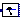
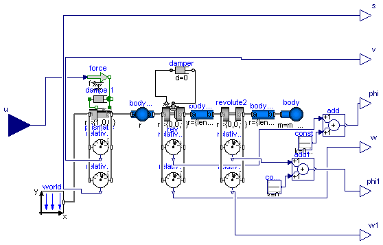

Modelica_LinearSystems2.Examples.Utilities.DoublePendulum
Modelica_LinearSystems2.Examples.Utilities.DoublePendulum
| Name | Description |
|---|---|
|  DoublePendulum | double pendulum system |
Modelica_LinearSystems2.Examples.Utilities.DoublePendulum
| Type | Name | Default | Description |
|---|---|---|---|
| Mass | m_trolley | 5 | [kg] |
| Mass | m_load | 20 | [kg] |
| Length | length | 2 | [m] |
| Angle | phi1_start | -80.0/180*pi | [rad] |
| Angle | phi2_start | 10 | [rad] |
| AngularVelocity | w1_start | 0.0 | [rad/s] |
| AngularVelocity | w2_start | 0.0 | [rad/s] |
| Type | Name | Description |
|---|---|---|
| input RealInput | u | |
| output RealOutput | s | |
| output RealOutput | v | |
| output RealOutput | phi | |
| output RealOutput | w | |
| output RealOutput | phi1 | |
| output RealOutput | w1 |
model DoublePendulum "double pendulum system" parameter Modelica.SIunits.Mass m_trolley = 5; parameter Modelica.SIunits.Mass m_load = 20; parameter Modelica.SIunits.Length length = 2; parameter Modelica.SIunits.Angle phi1_start = -80.0/180*pi; parameter Modelica.SIunits.Angle phi2_start = 10; parameter Modelica.SIunits.AngularVelocity w1_start = 0.0; parameter Modelica.SIunits.AngularVelocity w2_start = 0.0; constant Real pi = Modelica.Constants.pi;inner Modelica.Mechanics.MultiBody.World world(gravityType=Modelica.Mechanics.MultiBody.Types.GravityTypes. UniformGravity, animateWorld=false); Modelica.Mechanics.MultiBody.Joints.Prismatic prismatic(useAxisFlange=true); Modelica.Mechanics.Translational.Components.Damper damper1(d=0); Modelica.Mechanics.MultiBody.Joints.Revolute rev(n={0,0,1},useAxisFlange=true, phi(fixed=true, start=phi1_start), w(fixed=true, start=w1_start)); Modelica.Mechanics.Rotational.Components.Damper damper(d=0); Modelica.Mechanics.MultiBody.Parts.Body body( m=m_load, r_CM={0,0,0}, specularCoefficient=4*world.defaultSpecularCoefficient, sphereDiameter=1.5*world.defaultBodyDiameter); Modelica.Mechanics.MultiBody.Parts.BodyShape bodyShape( shapeType="box", animateSphere=true, m=m_trolley, sphereDiameter=world.defaultBodyDiameter); Modelica.Mechanics.Translational.Sources.Force force; Modelica.Mechanics.MultiBody.Sensors.RelativeAngles relativeAngles; Modelica.Mechanics.MultiBody.Sensors.RelativeVelocity relativeVelocity; Modelica.Mechanics.MultiBody.Sensors.RelativePosition relativePosition; Modelica.Blocks.Interfaces.RealInput u; Modelica.Blocks.Interfaces.RealOutput s; Modelica.Blocks.Interfaces.RealOutput v; Modelica.Blocks.Interfaces.RealOutput phi; Modelica.Blocks.Interfaces.RealOutput w; Modelica.Mechanics.MultiBody.Sensors.RelativeAngularVelocity relativeAngularVelocity; Modelica.Blocks.Sources.Constant const(k=0.5*Modelica.Constants.pi); Modelica.Blocks.Math.Add add; Modelica.Mechanics.MultiBody.Joints.Revolute revolute2( phi(fixed=true, start=phi2_start), w(fixed=true, start=w2_start), cylinderDiameter=3*world.defaultJointWidth, cylinderColor={0,0,200}); Modelica.Mechanics.MultiBody.Sensors.RelativeAngles relativeAngles1; Modelica.Mechanics.MultiBody.Sensors.RelativeAngularVelocity relativeAngularVelocity1; Modelica.Blocks.Interfaces.RealOutput phi1; Modelica.Blocks.Interfaces.RealOutput w1; Modelica.Blocks.Math.Add add1; Modelica.Blocks.Sources.Constant const1(k=0); Modelica.Mechanics.MultiBody.Parts.BodyCylinder bodyCylinder( r={length/2,0,0}, specularCoefficient=0.7, color={0,0,0}, diameter=0.05, density=900); Modelica.Mechanics.MultiBody.Parts.BodyCylinder bodyCylinder1( r={length/2,0,0}, specularCoefficient=0.7, color={0,0,0}, diameter=0.05, density=900); equationconnect(damper.flange_b, rev.axis); connect(rev.support, damper.flange_a); connect(bodyShape.frame_b, rev.frame_a); connect(prismatic.frame_a, world.frame_b); connect(force.flange, prismatic.axis); connect(damper1.flange_a, prismatic.support); connect(damper1.flange_b, prismatic.axis); connect(prismatic.frame_b, bodyShape.frame_a); connect(relativeVelocity.frame_b, prismatic.frame_b); connect(relativeVelocity.frame_a, prismatic.frame_a); connect(relativePosition.frame_b, relativeVelocity.frame_b); connect(relativePosition.frame_a, relativeVelocity.frame_a); connect(relativeAngles.frame_b, rev.frame_b); connect(relativeAngles.frame_a, rev.frame_a); connect(u, force.f); connect(relativeAngularVelocity.frame_a, relativeAngles.frame_a); connect(relativeAngularVelocity.frame_b, relativeAngles.frame_b); connect(relativeAngularVelocity.w_rel[3], w); connect(relativeVelocity.v_rel[1], v); connect(relativePosition.r_rel[1], s); connect(phi, phi); connect(add.y, phi); connect(const.y, add.u2); connect(add.u1, relativeAngles.angles[3]); connect(relativeAngles1.frame_a, revolute2.frame_a); connect(relativeAngles1.frame_b, revolute2.frame_b); connect(relativeAngles1.frame_a, relativeAngularVelocity1.frame_a); connect(relativeAngularVelocity1.frame_b, relativeAngles1.frame_b); connect(const1.y, add1.u2); connect(add1.u1, relativeAngles1.angles[3]); connect(add1.y, phi1); connect(relativeAngularVelocity1.w_rel[3], w1); connect(bodyCylinder1.frame_b, body.frame_a); connect(bodyCylinder1.frame_a, revolute2.frame_b); connect(bodyCylinder.frame_b, revolute2.frame_a); connect(bodyCylinder.frame_a, rev.frame_b); end DoublePendulum;